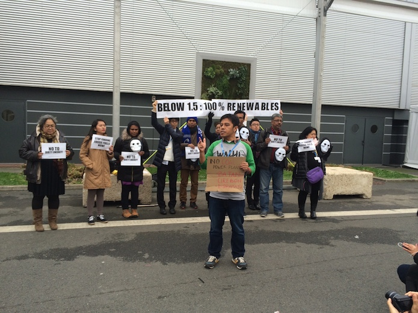
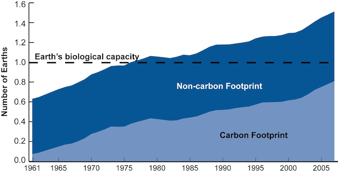

Paris climate agreement: betting on an ocean of data-led innovation
In the wake of the Paris climate agreement, Mark Harvey from ODI Member Resurgence explains why open data-based approaches will be vital in implementing it and monitoring its progress towards global targets
The Paris agreement has been praised as a triumph that will trigger a race into a new clean energy era.
But the agreement contains many paradoxes – the largest being that no emissions cuts are actually legally required of countries, and there is no mention of fossil fuels. This has been compared to concluding a treaty to ban cigarettes without mentioning the word ‘tobacco’.
On the eve of the agreement, Kevin Anderson of the Tyndall Centre for Climate Change Research highlighted the paradoxes in a different way. He pointed to a disconnect between the political process and the hard facts of bio-physical reality: to have any hope of reaching the ideal limit of 1.5 degrees Celsius included in the final text, global emissions need to peak by 2020 and developed countries – including the UK – need to be virtually carbon neutral by 2030, followed by the rest of the world by 2050.
"The bureaucrats have a better grasp of what is politically possible, and the protesters of what is physically necessary," said Anderson that day. “What do you want to bet on, science or politics?"

Indonesian community campaigners call for the 1.5 Celsius target. Photograph: Mark Harvey.
There may, however, be another area in which to place our bets. The clue for that lies in the shift away from the top-down, legally binding 'seal the deal' approach that doomed Copenhagen.
By contrast, the Paris agreement formalises the move to what is arguably a more open, innovation-led and learning-based process to achieve the global climate goals.
Though 'innovation' is mentioned only once in the document, we can see elements of it at play through:
a pooling of private sector, investor, community and city-level efforts to assess and ramp up what actually works
a movement beyond straight technology transfer to developing countries into actual capacity building for them to build their own research and development capability in new climate technologies
a focus at the next UN climate meeting in Marrakech on the scaling up of new innovations to help countries to meet their emissions pledges
Without turning their back on the politics or on the protesters, the negotiators in Paris decided, in the view of one veteran observer of the climate negotiations, to place a wager on an inclusive, ‘bottom up’ strategy that will encourage a rapid ratcheting up of national climate pledges. Importantly, the process will not just adjust to user feedback from adopters of low carbon technologies and energy efficiency, but to feedback from the earth’s systems themselves. Measuring the degree to which our increasingly degraded soils, forests and oceans remain sufficiently intact to act as sinks for our carbon emissions will be just as critical.
The move to a more dynamic monitoring and adjustment approach coordinated by the UN is, in essence, an innovation-friendly, iterative process that has the potential to become more ambitious and more agile (in terms of shorter formal ‘global stocktake’ cycles). And, according to Bertrand van Ee, the CEO of the EU's main climate innovation initiative, the Climate KIC, it is taking another cue from innovation practice by not over-investing in a single solution or a narrow set of solutions.
The agreement in Paris has unlocked an ocean of uncontested opportunities for business. A single solution will not be sufficient to bring about the systemic change required. We need many solutions to transform how we live, what we consume and how we do business.
These solutions will, of course, be powered by data as much as by clean energy: much of the flow of public and private capital into low carbon solutions will be based on a measurable return in reduced emissions, and much of it will be driven towards the growing number of data enterprises and startups that have moved into the climate space.
There is a final paradox of the Paris agreement: it has managed to unleash a vast requirement in data collection, verification and governance without once referring to data in the agreement itself.
Countries will be required to take part in a 'transparency framework' that will allow the reporting and monitoring of emissions reduction performance by the 195 countries. How this will actually work in practice remains unclear. What we can safely say, however, is that open data-based approaches are likely to prove vital both in implementing the agreement and in monitoring its progress towards the global targets.

The integrated carbon footprint of the Global Footprint Network uses thousands of increasingly open datasets
A number of international agencies and governments, including the UK’s Department of Energy and Climate Change, are already publishing their annual emissions data as open data. Many more need to follow suit in order to increase the transparency, accuracy and the innovation that will flow from this.
Open data will be key in:
allowing analysis of multiple datasets to find the shifting calculus between emissions reductions and the performance of natural carbon sinks
creating policy and planning tools, such as the Global Calculator, that help communities and regional/local planners work through through scenarios to achieve low carbon targets
enabling key actors such as city networks to analyse and to aggregate locally uploaded data on global platforms such as the Carbonn Climate Registry, which currently holds emissions data from over 600 cities
helping countries, regions, cities and communities to build resilience to climate stresses and shocks
It has taken the international community six years to banish the ghost of Copenhagen. We all have a collective responsibility to ensure that Paris does not become another failed climate agreement. But for those of you who work in data-led innovation: we need you to dive into that big open ocean.
Mark Harvey is the CEO of Resurgence, an ODI Member company, dedicated to building climate resilience in cities
If you have ideas or experience in open data that you'd like to share, pitch us a blog or tweet us at @ODIHQ.